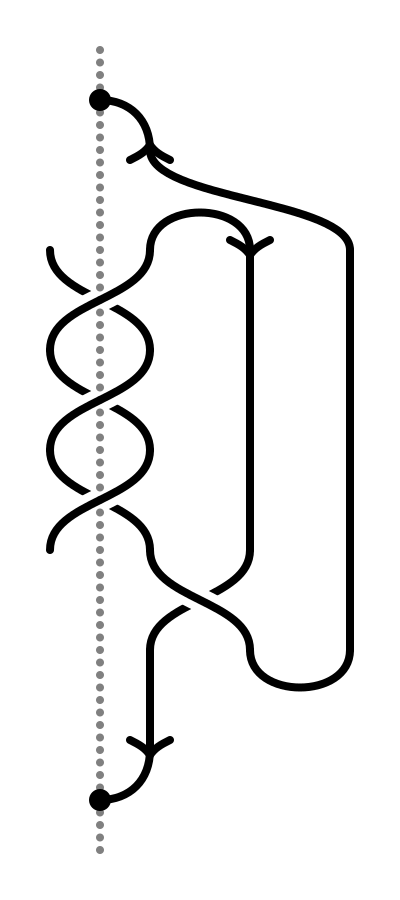

show all invariants|show all metadata
Input data and context

% b7_2-1
s.r1.y0.y0.y0.x1.u2
,1
% Symmetry 1 of a 2-bridge knot corresponding to the fraction 7/2 = [3,2] (Sakuma, Prop. 3.6, symmetry 1).
% Simplifies with options '-qs' to r1.y0.r2.y1.y1.y0.y0.y1.y1.y0.y0.y1.y1.y0.y0.y1.u2.y0.y0.y0.y0.y0.y0.y0.y0.x1.x0
% Simplifies with options '-qs' to r0.x1.r1.x2.y1.y0.y0.y1.y1.y0.y0.y1.y1.y0.x2.x1.u0.y0.x1.x0.y1.y1.y1.y1.y1.y1.y1
% Simplifies with options '-qs' to r1.y0.r1.x2.y1.y0.y0.y1.y1.y0.y0.y1.y1.y0.y0.y1.u2.x1.x0.y1.y1.y1.y1.y1.y1.y1.y1
% Simplifies with options '-qs' to r0.x1.r2.y1.y1.y0.y0.y1.y1.y0.y0.y1.y1.y0.y0.y1.u2.y0.y0.y0.y0.y0.y0.y0.y0.x1.x0
Bar-Natan multicurve \(\mathrm{\widetilde{BN}}(T)\)
options -c0-qs
(diagram)
(metadata)
% file 'examples/mine/k52/cxBNr-c0-qs', generated by kht++ 0.1 on Mon Nov 16 04:25:30 2026 UTC
1) h^0 q^22 δ^11 ⬮~~S~>⬯—>⬯~>⬯—>⬯~>⬮<—⬮~>⬯—>⬯~>⬯—>⬯~>⬮<—⬮~>⬯—>⬯~>⬯—>⬯~>⬮<—⬮~>⬯—>⬯~>⬯—>⬯
options -c2-qs
(diagram)
(metadata)
% file 'examples/mine/k52/cxBNr-c2-qs', generated by kht++ 0.1 on Mon Nov 16 04:25:20 2026 UTC
1) h^0 q^22 δ^11 ⬮~~S~>⬯—>⬯~>⬯—>⬯~>⬮<—⬮~>⬯—>⬯~>⬯—>⬯~>⬮<—⬮~>⬯—>⬯~>⬯—>⬯~>⬮<—⬮~>⬯—>⬯~>⬯—>⬯
options -c3-qs
(diagram)
(metadata)
% file 'examples/mine/k52/cxBNr-c3-qs', generated by kht++ 0.1 on Mon Nov 16 04:25:25 2026 UTC
1) h^0 q^22 δ^11 ⬮~~S~>⬯—>⬯~>⬯—>⬯~>⬮<—⬮~>⬯—>⬯~>⬯—>⬯~>⬮<—⬮~>⬯—>⬯~>⬯—>⬯~>⬮<—⬮~>⬯—>⬯~>⬯—>⬯
Khovanov multicurve \(\mathrm{\widetilde{Kh}}(T)\)
options -c0-qs
(diagram)
(metadata)
% file 'examples/mine/k52/cxKhr-c0-qs', generated by kht++ 0.1 on Mon Nov 16 04:25:30 2026 UTC
1) h^11 q^39 δ^17/2 ⬮~~(-S)~>⬯—>⬯~>⬯—>⬯~>⬯<—⬯<~⬯<—⬯<~⬮<— r(-4) q^216/5 δ|^17/2
2) h^ 7 q^33 δ^19/2 ⬮~~(-S)~>⬯—>⬯~>⬯—>⬯~>⬮—>⬮<~⬯<—⬯<~⬯<—⬯<~⬮<— s4(∞) q^38 δ_^9
3) h^ 3 q^27 δ^21/2 ⬮~~(-S)~>⬯—>⬯~>⬯—>⬯~>⬮—>⬮<~⬯<—⬯<~⬯<—⬯<~⬮<— s4(∞) q^32 δ_^10
4) h^-1 q^21 δ^23/2 ⬮~~(-S)~>⬯—>⬯~>⬯—>⬯~>⬮—>⬮<~⬯<—⬯<~⬯<—⬯<~⬮<— s4(∞) q^26 δ_^11
options -c2-qs
(diagram)
(metadata)
% file 'examples/mine/k52/cxKhr-c2-qs', generated by kht++ 0.1 on Mon Nov 16 04:25:20 2026 UTC
1) h^11 q^39 δ^17/2 ⬮~~S~>⬯—>⬯~>⬯—>⬯~>⬯<—⬯<~⬯<—⬯<~⬮<— r(-4) q^216/5 δ|^17/2
2) h^ 7 q^33 δ^19/2 ⬮~~S~>⬯—>⬯~>⬯—>⬯~>⬮—>⬮<~⬯<—⬯<~⬯<—⬯<~⬮<— s4(∞) q^38 δ_^9
3) h^ 3 q^27 δ^21/2 ⬮~~S~>⬯—>⬯~>⬯—>⬯~>⬮—>⬮<~⬯<—⬯<~⬯<—⬯<~⬮<— s4(∞) q^32 δ_^10
4) h^-1 q^21 δ^23/2 ⬮~~S~>⬯—>⬯~>⬯—>⬯~>⬮—>⬮<~⬯<—⬯<~⬯<—⬯<~⬮<— s4(∞) q^26 δ_^11
options -c3-qs
(diagram)
(metadata)
% file 'examples/mine/k52/cxKhr-c3-qs', generated by kht++ 0.1 on Mon Nov 16 04:25:25 2026 UTC
1) h^11 q^39 δ^17/2 ⬮~~(-S)~>⬯—>⬯~>⬯—>⬯~>⬯<—⬯<~⬯<—⬯<~⬮<— r(-4) q^216/5 δ|^17/2
2) h^ 7 q^33 δ^19/2 ⬮~~(-S)~>⬯—>⬯~>⬯—>⬯~>⬮—>⬮<~⬯<—⬯<~⬯<—⬯<~⬮<— s4(∞) q^38 δ_^9
3) h^ 3 q^27 δ^21/2 ⬮~~(-S)~>⬯—>⬯~>⬯—>⬯~>⬮—>⬮<~⬯<—⬯<~⬯<—⬯<~⬮<— s4(∞) q^32 δ_^10
4) h^-1 q^21 δ^23/2 ⬮~~(-S)~>⬯—>⬯~>⬯—>⬯~>⬮—>⬮<~⬯<—⬯<~⬯<—⬯<~⬮<— s4(∞) q^26 δ_^11